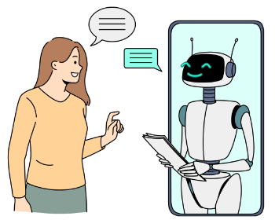

O objetivo geral do nosso trabalho é promover melhorias significativas no Pré-IFRS, adaptando-o às necessidades específicas do nosso campus e tornando-o mais atrativo e eficaz para os estudantes. Para isso, propomos a utilização de técnicas de gamificação, que incluem a criação de materiais audiovisuais, como vídeos e podcasts, além de outros recursos interativos e intuitivos que possam tornar a experiência de aprendizado mais envolvente e dinâmica.

Buscamos integrar uma solução baseada em inteligência artificial, capaz de oferecer suporte personalizado aos usuários na resolução de questões. Essa tecnologia será projetada para fornecer explicações diversificadas, adaptadas a diferentes estilos de aprendizado e preferências, garantindo que todos os estudantes possam compreender os conteúdos de maneira clara e eficiente.
Um site que nos serve de exemplo de plataforma de ensino gamificada é o Duolingo, um site/aplicativo utilizado para o estudo de idiomas. O duolingo utiliza de tecnicas de gamificação como moedas para personalização, questões rápidas que fixam o conteúdo e uma interface intuitiva.
Além disso, nosso objetivo específico é desenvolver um banco de questões que amplie os conteúdo presente no site, com questões atuais.